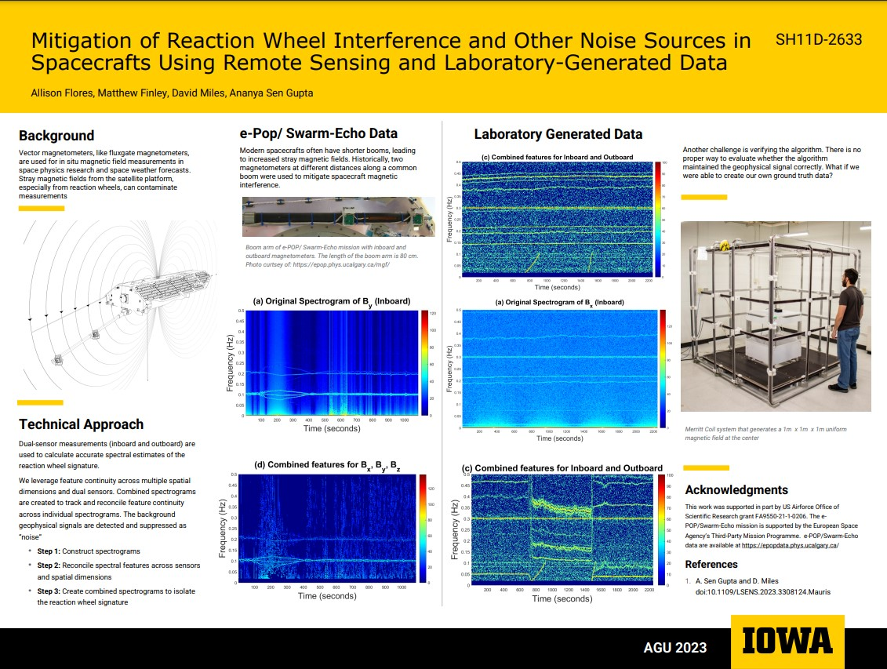

My Research
Welcome to my research page!
I started researching with Dr. Ananya Sen Gupta during my undergrad. As an undergrad researcher
I worked on multiple projects and gained insight on using MATLAB as a signal processing tool as well
as revising research documents. My work included breaking down a complex algorithm used to analyze oil
weathering from the Deep Water Horizon Oil Spill
I continued my education and focused on signal processing for chemicals contained in milk samples,
working along side the FDA. I learned about multiple techniques, such as using peak energies to quantify a
signal to implement a comparison algorithm, finding items relative to one another, Principal Component Analysis,
and K-Means Clustering. The goal of this research was to find analytes that appear in multiple samples that may
need to be targeted.
My current reserach pivoted to a new domain in space physics. I now help scientists in heliophysics that
analyze phenomena like space weather, trying to give them the most reliable data. To study these phenomena,
magnetometers are flown into space. The spacecraft they are on also has its own magnetic field and
can impact the data.
I enjoy the interdisciplinary work that I can be apart of and hope to continue to learn more about the complexities of
how information evolves in complicated systems, such as the human body, specifically the brain.
Projects
- TRACERS:
I am apart of the graduate team that is working for the TRACERS mission led by Dr. David Miles.
I have been apart in the magnetic screening process, ensuring that the magnetometers onboard the two satellites will not be
greatly impacted by the magnetic field generated from the spacecraft. My current research deals with mitigating the noise
generated by the spacecraft by creating an algorithm that can isolate and remove the information. Click for more information about
TRACERS
- E-POP/Swarm-Echo:
This mission is where most of my algorithm development takes place. The satellite used
in this mission has large traces of interference due to the attitude control systems managed by reaction wheels. Keeping in
mind the frequencies that the reaction wheels spin at, we can track the location in the time-frequency domain in which the
satellite created. For my dissertation proposal, most of the data that I will be working with will be from this satellite. Click
for more informatin about E-POP/Swarm-Echo
- Other Missions:
There is interest in making the algorithm applicable to any satellite. To ensure that this
is true, data from Parker Solar Probe, GOES Satellites, and other missions may also be utilized to learn what features and
techniques is best applicable for all spacecrafts.
Conference
- Reaction Wheel Interference Mitigation within Magnetometer Data Utilizing Harmonic Structures:
Allison Flores, Ananya Sen Gupta, David Miles
AGU Fall Meeting 2024
Missions focused on space weather require magnetic field measurements.
Satellite subsystems can emit their own magnetic field,
interfering with the data. One such subsystem includes reaction wheels,
which are commonly used for attitude control. The CASSIOPE/SwarmEcho satellite
is a perfect example where the time-varying reaction wheel
noise overlays the target geophysical signals. Typically, Ness-gradiometry
is utilized where the difference between the two vector magnetometers at
different distances from the spacecraft gives an estimate of the noise
that can be subtracted. With shorter booms, the sensors experience a
more complex multi-pole noise source necessitating additional signal
processing to mitigate. We explore analyzing the signal in the frequency
domain, where the fundamental and harmonics signatures of the reaction
wheels are targeted and removed. We present our findings using data
collected from the CASSIOPE/Swarm-Echo satellite as a case study
- Mitigating Magnetic Interference in Space Science Missions: A Case Study of Feature Separation Techniques:
Allison Flores, Ananya Sen Gupta, David Miles
Hesto Conference
Space science missions seeking to take magnetic field measurements are susceptible to local magnetic
interference from common for satellite subsystems, including reaction wheels, magnetorquers, solar panels,
etc. Magnetic screening and other characterization tests help in identifying sources of interference and,
in some cases, mitigating them by design. Historical algorithms, such as the Ness technique, are reasonably
effective at removing some magnetic sources and preserving the geophysical field. However, complex and
time-varying magnetic interference has been a significant challenge and in recent years, multiple algorithms
have been developed with the goal of mitigating complex the interference signals. Here, we present a case
study of our method, in which we perform feature separation of reaction wheels by utilizing information from
two vector magnetometers along a boom. In particular, we present results from the e-POP/Swarm-Echo mission.
We also discuss how the presented methodology is broadly applicable beyond the e-POP mission and the specific
application used in this case study.
- Mitigation of reaction wheel interference and other noise sources in spacecraft using remote sensing and laboratory-generated data:
Allison Flores, Matthew Finley, Ananya Sen Gupta, David Miles
AGU Fall Meeting 2023
Magnetic interference mitigation for onboard spacecraft instruments is paramount for accurate geophysical
magnetometer data. It is an active research area to separate the interference signal caused by the spacecraft
from the geophysical background signal. We address this challenge using signal processing techniques employed
across both the time and frequency domains. A case study of our algorithm, focusing on topological connectivity
in the spectral domain, has been performed on e-POP/Swarm-Echo mission. However, there is no proper way to evaluate
whether the algorithm maintained the geophysical signal correctly. A new laboratory-generated dataset that mimics
noise sources, like the reaction wheel, has been created at the University of Iowa and further developed at
Goddard. We will present how our algorithm performed in multiple scenarios where the noise source signature and
simulated geophysical signature are known. From there, we determine the limitations of our algorithm and pinpoint
specific examples that may be of interest to noise mitigation developers. This work was support in part by US
Airforce Office of Scientific Research grant FA9550-21-1-0206. The e-POP/Swarm-Echo mission is supported by
the European Space Agency's Third Party Mission Programme. e-POP/Swarm-Echo data are available at
https://epopdata.phys.ucalgary.ca/
